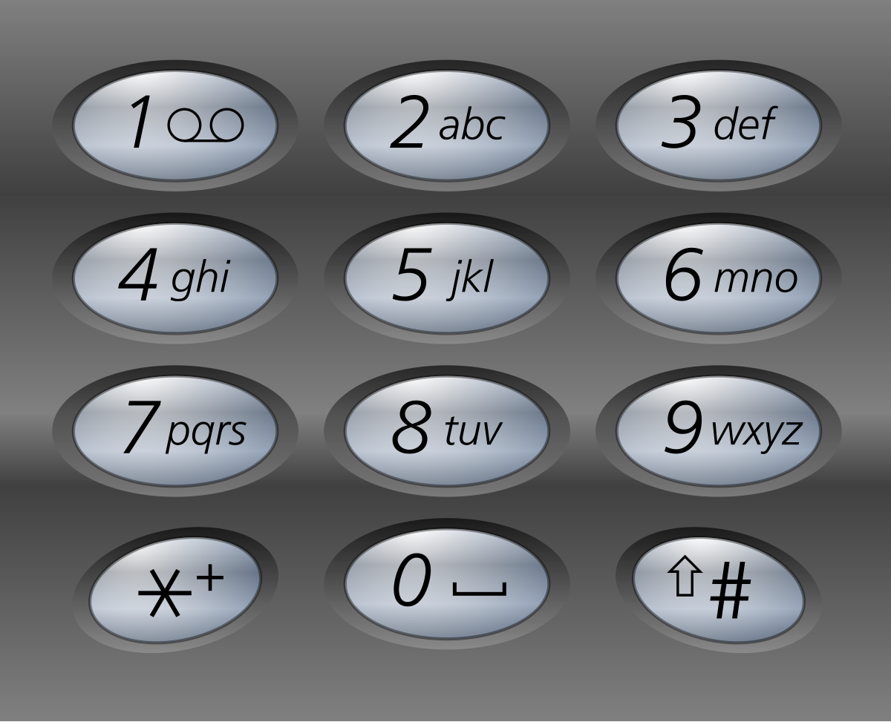

矩阵 矩阵置零 定一个 m x n 的矩阵，如果一个元素为 0 ，则将其所在行和列的所有元素都设为 0 。请使用原地 算法。
示例：matrix = [[1,1,1],[1,0,1],[1,1,1]][[1,0,1],[0,0,0],[1,0,1]]
最直观的方法就是使用标记数组，用boolean类型的数组标记出现0的行数与列数，最后再遍历
1 2 3 4 5 6 7 8 9 10 11 12 13 14 15 16 17 18 19 20 class Solution {public void setZeroes (int [][] matrix) {int m = matrix.length, n = matrix[0 ].length;boolean [] row = new boolean [m], column = new boolean [n];for (int i = 0 ; i < m; i++)for (int j = 0 ; j < n; j++)if (matrix[i][j] == 0 ) {true ;true ;for (int i = 0 ; i < m; i++) {if (row[i])0 );else for (int j = 0 ; j < n; j++)if (column[j])0 ;
本题的时间基本都是定死在$O(mn)$左右了，因此主要是讨论如何省空间。我们可以用矩阵的第一行和第一列代替标记数组。但需要另外的标记变量来标记第一列是否存在0
1 2 3 4 5 6 7 8 9 10 11 12 13 14 15 16 17 18 19 20 class Solution {public void setZeroes (int [][] matrix) {int m = matrix.length, n = matrix[0 ].length;boolean flagCol0 = false ;for (int i = 0 ; i < m; i++) {0 ] == 0 ;for (int j = 1 ; j < n; j++) {if (matrix[i][j] == 0 )0 ] = matrix[0 ][j] = 0 ;for (int i = m - 1 ; i >= 0 ; i--)for (int j = 1 ; j < n; j++)if (matrix[i][0 ] == 0 || matrix[0 ][j] == 0 ) {0 ;if (flagCol0)0 ] = 0 ;
螺旋矩阵 给你一个 m 行 n 列的矩阵 matrix ，请按照 顺时针螺旋顺序 ，返回矩阵中的所有元素。
示例：
古法模拟，可读性为0
1 2 3 4 5 6 7 8 9 10 11 12 13 14 15 16 17 18 19 20 21 22 23 24 25 26 27 28 29 30 31 32 33 34 35 36 37 38 39 40 class Solution {public List<Integer> spiralOrder (int [][] matrix) {int n = matrix[0 ].length, m = matrix.length, i = 0 , j = 0 , left = -1 , right = n, up = -1 , down = m;new ArrayList <>();while (true ) {if (down - up <= 1 && right - left <= 1 ) {return ans;for (; j + 1 < right; j++)if (down - up <= 2 )else for (; i + 1 < down; i++)if (right - left <= 2 )else for (; j - 1 > left; j--)if (down - up <= 2 )else for (; i - 1 > up; i--)if (right - left <= 2 )else
除了以上的方法，还可以使用其他的方法模拟。
使用boolean矩阵进行辅助
使用向量变换，乘矩阵[cos(a) -sin(a)][sin(a) cos(a)]
旋转图像 给定一个 n × n 的二维矩阵 matrix 表示一个图像。请你将图像顺时针旋转 90 度。
你必须在 原地 旋转图像，这意味着你需要直接修改输入的二维矩阵。请不要 使用另一个矩阵来旋转图像。
示例：
原地旋转的思路不难，但实现的话幼多次调试
1 2 3 4 5 6 7 8 9 10 11 12 13 14 15 class Solution {public void rotate (int [][] matrix) {int temp;if (matrix.length == 1 )return ;for (int i = 0 ; i < matrix.length / 2 ; i++)for (int j = 0 ; j < matrix.length / 2 + (matrix.length % 2 == 1 ? 1 : 0 ); j++) {1 - j][i];1 - j][i] = matrix[matrix.length - 1 - i][matrix.length - 1 - j];1 - i][matrix.length - 1 - j] = matrix[j][matrix.length - 1 - i];1 - i] = temp;
搜索二叉矩阵 编写一个高效的算法来搜索 m x n 矩阵 matrix 中的一个目标值 target 。该矩阵具有以下特性：
每行的元素从左到右升序排列。
每列的元素从上到下升序排列。
示例：matrix = [[1,4,7,11,15],[2,5,8,12,19],[3,6,9,16,22],[10,13,14,17,24],[18,21,23,26,30]], target = 5true
经评论区高人提醒，可以把表格当作以右上角为根节点的BST，问题迎刃而解
1 2 3 4 5 6 7 8 9 10 11 12 13 14 15 16 class Solution {public boolean searchMatrix (int [][] matrix, int target) {int m = matrix.length, n = matrix[0 ].length, i = 0 , j = n - 1 ;if (m == n && m == 1 )return target == matrix[0 ][0 ];while (i >= 0 && i < m && j >= 0 && j < n) {if (target == matrix[i][j])return true ;else if (target > matrix[i][j])else return false ;
也可以二分查找
1 2 3 4 5 6 7 8 9 10 11 12 13 14 15 16 17 18 19 20 21 22 23 24 25 26 class Solution {public boolean searchMatrix (int [][] matrix, int target) {for (int [] row : matrix) {int index = search(row, target);if (index >= 0 )return true ;return false ;public int search (int [] nums, int target) {int low = 0 , high = nums.length - 1 ;while (low <= high) {int mid = (high - low) / 2 + low;int num = nums[mid];if (num == target) {return mid;else if (num > target)1 ;else 1 ;return -1 ;
普通数组 最大子数组和 给你一个整数数组 nums ，请你找出一个具有最大和的连续子数组（子数组最少包含一个元素），返回其最大和。nums = [-2,1,-3,4,-1,2,1,-5,4]6[4,-1,2,1] 的和最大，为 6 。
动态规划 用$f(i)$表示以第$i$个数结尾的“连续子数组最大和”，那么很容易有
1 2 3 4 5 6 7 8 9 10 class Solution {public int maxSubArray (int [] nums) {int pre = 0 , maxAns = nums[0 ];for (int x : nums) {return maxAns;
分治 我们定义一个操作 get(a, l, r) 表示查询 a 序列 [l,r] 区间内的最大子段和，那么最终我们要求的答案就是 get(nums, 0, nums.size() - 1)。如何分治实现这个操作呢？对于一个区间 [l,r]，我们取 $m=\lfloor 2l+r \rfloor$，对区间 [l,m] 和 [m+1,r] 分治求解。当递归逐层深入直到区间长度缩小为 1 的时候，递归“开始回升”。这个时候我们考虑如何通过 [l,m] 区间的信息和 [m+1,r] 区间的信息合并成区间 [l,r] 的信息。最关键的两个问题是如何维护区间内信息和如何合并信息。
对于一个区间[l,r]，我们维护4个量
lSum表示[l,r]内以l为左端点的最大子段和rSum表示[l,r]内以l为右端点的最大子段和mSum表示[l,r]内的最大子段和iSum表示[l,r]内的区间和
设[l.m]为[l,r]的左子区间，[m.r]为[l,r]的右子区间。若区间长度为1，这4个量都相等。对于长度大于1的区间
$iSum = iSum_{左子区间}+iSum_{右子区间}$
$lSum = \max { lSum_{左子区间},iSum_{右子区间}+lSum_{右子区间}}$
$rSum = \max { rSum_{右子区间},iSum_{左子区间}+rSum_{左子区间}}$
$mSum = \max { mSum_{左子区间},mSum_{右子区间},rSum_{左子区间}+lSum_{左子区间}}$
1 2 3 4 5 6 7 8 9 10 11 12 13 14 15 16 17 18 19 20 21 22 23 24 25 26 27 28 29 30 31 32 33 34 class Solution {public class Status {public int lSum, rSum, mSum, iSum;public Status (int lSum, int rSum, int mSum, int iSum) {this .lSum = lSum;this .rSum = rSum;this .mSum = mSum;this .iSum = iSum;public int maxSubArray (int [] nums) {return getInfo(nums, 0 , nums.length - 1 ).mSum;public Status getInfo (int [] a, int l, int r) {if (l == r) {return new Status (a[l], a[l], a[l], a[l]);int m = (l + r) >> 1 ;Status lSub = getInfo(a, l, m);Status rSub = getInfo(a, m + 1 , r);return pushUp(lSub, rSub);public Status pushUp (Status l, Status r) {int iSum = l.iSum + r.iSum;int lSum = Math.max(l.lSum, l.iSum + r.lSum);int rSum = Math.max(r.rSum, r.iSum + l.rSum);int mSum = Math.max(Math.max(l.mSum, r.mSum), l.rSum + r.lSum);return new Status (lSum, rSum, mSum, iSum);
将分治下来以后区间的信息用堆式存储的方式记忆下来，即建成了一棵真正的树以后，我们就可以在$O(\log n)$时间内找到任意区间的答案。这棵树称为线段树 。
前缀和 1 2 3 4 5 6 7 8 9 10 11 12 13 class Solution {public int maxSubArray (int [] nums) {int ans=Integer.MIN_VALUE;int min=0 ;int sum=0 ;for (int i : nums) {return ans;
数组犹如一座山，我们用最高的山峰减去最低的山谷。
合并区间 以数组 intervals 表示若干个区间的集合，其中单个区间为 intervals[i] = [starti, endi] 。请你合并所有重叠的区间，并返回 一个不重叠的区间数组，该数组需恰好覆盖输入中的所有区间 。
示例：intervals = [[1,3],[2,6],[8,10],[15,18]][[1,6],[8,10],[15,18]][1,3] 和 [2,6] 重叠, 将它们合并为 [1,6].
其中的区间按照左端点升序排序。然后我们建第一个区间加入merged数组中，并按顺序考虑以后的每个区间。
若当前区间的左端点在返回数组中最后一个区间的右端点后，就不会重合，直接加入返回数组中。
否则，二者冲个，用当前区间的右端点更新数组merged中最后一个区间的右端点。
1 2 3 4 5 6 7 8 9 10 11 12 13 14 15 16 class Solution {public int [][] merge(int [][] intervals) {if (intervals.length == 0 )return new int [0 ][2 ];0 ] - b[0 ]);int []> merged = new ArrayList <int []>();for (int i = 0 ; i < intervals.length; ++i) {int L = intervals[i][0 ], R = intervals[i][1 ];if (merged.size() == 0 || merged.get(merged.size() - 1 )[1 ] < L)new int []{L, R});else 1 )[1 ] = Math.max(merged.get(merged.size() - 1 )[1 ], R);return merged.toArray(new int [merged.size()][]);
轮转数组 给定一个整数数组nums，将数组中的元素向右轮转 k 个位置，其中 k 是非负数。
示例:nums = [1,2,3,4,5,6,7], k = 3[5,6,7,1,2,3,4][7,1,2,3,4,5,6][6,7,1,2,3,4,5][5,6,7,1,2,3,4]
此处仅介绍环状替换这种办法。其实思路是不难的，但面对k恰好是数组长的倍数的情况，就要想新办法。
我们不妨先考虑这样一个问题：从 0 开始不断遍历，最终回到起点 0 的过程中，我们遍历了多少个元素？
也可以换个方式完成代码。使用单独的变量count跟踪当前已访问的元素数量。count = n时结束遍历。
1 2 3 4 5 6 7 8 9 10 11 12 13 14 15 16 17 18 19 20 21 class Solution {public void rotate (int [] nums, int k) {int n = nums.length;int count = gcd(k, n);for (int start = 0 ; start < count; ++start) {int current = start, prev = nums[start];do {int next = (current + k) % n;int temp = nums[next];while (start != current);public int gcd (int x, int y) {return y > 0 ? gcd(y, x % y) : x;
或者可以用更简单的方式解决？数组中有些元素是要放到数组头部的，那不如直接反转
1 2 3 4 5 6 7 8 9 10 11 12 13 14 15 16 17 18 class Solution {public void rotate (int [] nums, int k) {0 , nums.length - 1 );0 , k - 1 );1 );public void reverse (int [] nums, int start, int end) {while (start < end) {int temp = nums[start];1 ;1 ;
除自身外数组的乘积 给你一个整数数组 nums，返回 数组 answer ，其中 answer[i] 等于 nums 中除 nums[i] 之外其余各元素的乘积 。nums之中任意元素的全部前缀元素和后缀的乘积都在 32 位 整数范围内。不要使用除法 ，且在 O(n) 时间复杂度内完成此题。nums = [1,2,3,4][24,12,8,6]
这是按照提示写的前后缀和法
1 2 3 4 5 6 7 8 9 10 11 12 13 14 class Solution {public int [] productExceptSelf(int [] nums) {int [] prefix = new int [nums.length], suffix = new int [nums.length], ans = new int [nums.length];0 ] = 1 ;1 ] = 1 ;for (int i = 1 ; i < nums.length; i++) {1 ] * nums[i - 1 ];1 ] = suffix[nums.length - i] * nums[nums.length - i];for (int i = 0 ; i < nums.length; i++)return ans;
也可以将前缀和或后缀和数组用输出数组来计算。先用结果数组放前缀和，再将后缀和放到一个变量上。
1 2 3 4 5 6 7 8 9 10 11 12 13 14 15 class Solution {public int [] productExceptSelf(int [] nums) {int length = nums.length;int [] answer = new int [length];0 ] = 1 ;for (int i = 1 ; i < length; i++)1 ] * answer[i - 1 ];int R = 1 ;for (int i = length - 1 ; i >= 0 ; i--) {return answer;
缺失的第一个正数 给你一个未排序的整数数组 nums ，请你找出其中没有出现的最小的正整数。
示例：nums = [3,4,-1,1]21 在数组中，但 2 没有。
如果不要求时空复杂度，那么就是简单题
1 2 3 4 5 6 7 8 9 10 11 12 class Solution {public int firstMissingPositive (int [] nums) {new HashSet <>();for (int i : nums)if (i > 0 )for (int i = 1 ; i <= Integer.MAX_VALUE; i++)if (!set.contains(i))return i;return 0 ;
哈希表 我们为什么需要哈希表，因为哈希表可以快速寻找需要的数字的数据结构。我们需要设计一个标记以替代哈希表的功能。
小于0的数统一变成 N + 1
遍历每一个数$x$，它可能已经被打了标记，因此原本对应的数是$|x|$，若$|x|\in [1,N]$，那么就给第$|x|-1$个元素加负号（原先就有的不用加了）
若数组中每一个数字都是负数，那么结果就是N + 1，否则答案是第一个正数的位置加1。
长话短说：给负数作不可能的答案作标记，正数作负号标记。妙哉妙哉。
1 2 3 4 5 6 7 8 9 10 11 12 13 14 15 16 17 class Solution {public int firstMissingPositive (int [] nums) {int n = nums.length;for (int i = 0 ; i < n; ++i)if (nums[i] <= 0 )1 ;for (int i = 0 ; i < n; ++i) {int num = Math.abs(nums[i]);if (num <= n)1 ] = -Math.abs(nums[num - 1 ]);for (int i = 0 ; i < n; ++i)if (nums[i] > 0 )return i + 1 ;return n + 1 ;
置换 若数组中包含$x\in [1,N]$，那么恢复后，数组第$x-1$个元素为$x$。因此可以尝试进行恢复数组。num[i]和nums[x - 1]，若nums[i]依然满足则继续交换，直到$x \notin [1,N]$。num[i] = num[x - 1]，则跳出循环。
1 2 3 4 5 6 7 8 9 10 11 12 13 14 15 16 class Solution {public int firstMissingPositive (int [] nums) {int n = nums.length;for (int i = 0 ; i < n; ++i) {while (nums[i] > 0 && nums[i] <= n && nums[nums[i] - 1 ] != nums[i]) {int temp = nums[nums[i] - 1 ];1 ] = nums[i];for (int i = 0 ; i < n; ++i)if (nums[i] != i + 1 )return i + 1 ;return n + 1 ;
回溯 全排列 给定一个不含重复数字的数组nums，返回其所有可能的全排列 。可以按任意顺序返回答案
示例：nums = [1,2,3][[1,2,3],[1,3,2],[2,1,3],[2,3,1],[3,1,2],[3,2,1]]
回溯法 ：一种通过探索所有可能的候选解来找出所有的解的算法。如果候选解被确认不是一个解（或者至少不是最后一个解），回溯算法会通过在上一步进行一些变化抛弃该解，即回溯并且再次尝试。
我们定义递归函数backtrack(first, output)表示从左到右填到第first个位置，当前排列为output
若first = n，说明我们已经填完了这么多位置。我们将output放入答案数组中，递归结束。
若first = n，我们要考虑第first位置应该填什么数。这里主要是不能填已经填过的数。我们要么是定义一个标记数组，要么是将原有数组nums划分为两部分，左边为已经填过的数，右边表示将要填的数。在回溯的时候动态维护这个数组即可。
1 2 3 4 5 6 7 8 9 10 11 12 13 14 15 16 17 18 19 20 21 class Solution {public List<List<Integer>> permute (int [] nums) {new ArrayList <List<Integer>>();new ArrayList <Integer>();for (int num : nums)int n = nums.length;0 );return res;public void backtrack (int n, List<Integer> output, List<List<Integer>> res, int first) {if (first == n)new ArrayList <Integer>(output));for (int i = first; i < n; i++) {1 );
子集 给你一个整数数组nums，数组中的元素互不相同。返回该数组所有可能的子集。
示例：nums = [1,2,3][[],[1],[2],[1,2],[3],[1,3],[2,3],[1,2,3]]
迭代 原序列中每个数字$a_i$的状态只有在不在子集中的两种状态。可以使用位图实现这种关系。
1 2 3 4 5 6 7 8 9 10 11 12 13 14 15 16 class Solution {new ArrayList <Integer>();new ArrayList <List<Integer>>();public List<List<Integer>> subsets (int [] nums) {int n = nums.length;for (int mask = 0 ; mask < (1 << n); ++mask) {for (int i = 0 ; i < n; ++i)if ((mask & (1 << i)) != 0 )new ArrayList <Integer>(t));return ans;
1 << n表示有这么多位的0（n+1位为1）。若i走到了mask中标1的位置则加入数据。
递归 1 2 3 4 5 6 7 8 9 10 11 12 13 14 15 16 17 18 19 20 class Solution {new ArrayList <Integer>();new ArrayList <List<Integer>>();public List<List<Integer>> subsets (int [] nums) {0 , nums);return ans;public void dfs (int cur, int [] nums) {if (cur == nums.length) {new ArrayList <Integer>(t));return ;1 , nums);1 );1 , nums);
第一个add为考虑选择当前位置的情况，第二个add为不考虑选择当前位置的情况
graph TD
a1[1,2,3]-->a2[ ]-->a3[1]-->a4[1,2]-->a5[1,2,3]
a3-->b1[2]-->b2[2,3]
b1-->c1[3]
a4-->d1[1,3]
电话号码的字母组合 给定一个仅包含数字 2-9 的字符串，返回所有它能表示的字母组合。答案可以按 任意顺序 返回。

示例：digits = "23"["ad","ae","af","bd","be","bf","cd","ce","cf"]
思路其实不难，就是实现起来比较麻烦
graph TD
A["23"]
2-->a
2-->b
2-->c
a-->3
3-->d
3-->e
3-->f
d-->B["ad"]
e-->C["ae"]
f-->D["af"]
终于对回溯法有了一点点理解
1 2 3 4 5 6 7 8 9 10 11 12 13 14 15 16 17 18 19 20 21 22 23 class Solution {new ArrayList <>();char [][] table = { { '\0' }, { '\0' }, { 'a' , 'b' , 'c' }, { 'd' , 'e' , 'f' }, { 'g' , 'h' , 'i' }, { 'j' , 'k' , 'l' },{ 'm' , 'n' , 'o' }, { 'p' , 'q' , 'r' , 's' }, { 't' , 'u' , 'v' }, { 'w' , 'x' , 'y' , 'z' } };public List<String> letterCombinations (String digits) {if (digits.length() == 0 )return new ArrayList <>();0 , new String (), digits);return ans;public void function (int first, String output, String digits) {if (first == digits.length()) {return ;for (int i = 0 ; i < table[(int ) (digits.charAt(first) - '0' )].length; i++) {StringBuilder sb = new StringBuilder (output);'0' ][i]);1 , sb.toString(), digits);
官解利用哈希表替代了我这个数组
1 2 3 4 5 6 7 8 9 10 11 12 13 14 15 16 17 18 19 20 21 22 23 24 25 26 27 28 29 30 31 32 33 34 35 class Solution {public List<String> letterCombinations (String digits) {new ArrayList <String>();if (digits.length() == 0 ) {return combinations;new HashMap <Character, String>() {{'2' , "abc" );'3' , "def" );'4' , "ghi" );'5' , "jkl" );'6' , "mno" );'7' , "pqrs" );'8' , "tuv" );'9' , "wxyz" );0 , new StringBuffer ());return combinations;public void backtrack (List<String> combinations, Map<Character, String> phoneMap, String digits, int index, StringBuffer combination) {if (index == digits.length()) {else {char digit = digits.charAt(index);String letters = phoneMap.get(digit);int lettersCount = letters.length();for (int i = 0 ; i < lettersCount; i++) {1 , combination);
组合总和 给你一个 无重复元素 的整数数组 candidates 和一个目标整数 target ，找出 candidates 中可以使数字和为目标数 target 的 所有 不同组合 ，并以列表形式返回。你可以按 任意顺序 返回这些组合。candidates 中的 同一个 数字可以 无限制重复被选取 。如果至少一个数字的被选数量不同，则两种组合是不同的。target 的不同组合数少于 150 个。
示例：candidates = [2,3,6,7], target = 7[[2,2,3],[7]]2 + 2 + 3 = 7 。注意 2 可以使用多次。7 = 7 。
定义递归函数dfs(target, combine, idx)表示当前在candidates数组的前idx位，还剩target要组合，已经组合的列表为combine，递归的终止条件为target < 0或candidate数组元素全部用完。idx，则执行dfs(target, combine, idx + 1)；若选择，则执行idx``dfs(target - candidate[idx], combine, idx)，由于数字可以重复选取，那么搜索的下标仍为idx。
1 2 3 4 5 6 7 8 9 10 11 12 13 14 15 16 17 18 19 20 21 22 23 class Solution {public List<List<Integer>> combinationSum (int [] candidates, int target) {new ArrayList <List<Integer>>();new ArrayList <Integer>();0 );return ans;public void dfs (int [] candidates, int target, List<List<Integer>> ans, List<Integer> combine, int idx) {if (idx == candidates.length)return ;if (target == 0 ) {new ArrayList <Integer>(combine));return ;1 );if (target - candidates[idx] >= 0 ) {1 );
括号生成 数字 n 代表生成括号的对数，请你设计一个函数，用于能够生成所有可能的并且 有效的 括号组合。
示例：n = 3["((()))","(()())","(())()","()(())","()()()"]
简单点的回溯，不用删除节点，就是一个个向下，一个不那么递归的递归
1 2 3 4 5 6 7 8 9 10 11 12 13 14 15 16 17 18 19 20 class Solution {public List<String> generateParenthesis (int n) {new ArrayList <>();"" , 0 , 0 );return ans;public void dfs (List<String> ans, int n, String output, int left, int right) {if ((left == n && right == n)) {return ;if (left < n)"(" , left + 1 , right);if (right < left)")" , left, right + 1 );
官解中回溯法的思路和我这里是差不多的
1 2 3 4 5 6 7 8 9 10 11 12 13 14 15 16 17 18 19 20 21 22 23 24 class Solution {public List<String> generateParenthesis (int n) {new ArrayList <String>();new StringBuilder (), 0 , 0 , n);return ans;public void backtrack (List<String> ans, StringBuilder cur, int open, int close, int max) {if (cur.length() == max * 2 ) {return ;if (open < max) {'(' );1 , close, max);1 );if (close < open) {')' );1 , max);1 );
还可以换种方法递归。任何一个括号序列都一定是由(开头，并且有唯一对应的)。这样一来，每一个括号序列都可以用(a)b表示。generate(n)来返回长度为2n的所有可能的括号序列。在这个函数中，我们需要
枚举与第一个(对应的)的位置2i+1
递归调用generate(i)计算a的所有可能性
递归调用generate(n - i - 1)计算b的所有可能性
为了节约计算时间，还可以用cache数组存储每次generate[i]的结果
1 2 3 4 5 6 7 8 9 10 11 12 13 14 15 16 17 18 19 20 21 22 23 class Solution {new ArrayList [100 ];public List<String> generate (int n) {if (cache[n] != null )return cache[n];new ArrayList <String>();if (n == 0 )"" );else for (int c = 0 ; c < n; ++c)for (String left: generate(c))for (String right: generate(n - 1 - c))"(" + left + ")" + right);return ans;public List<String> generateParenthesis (int n) {return generate(n);
单词搜索 给定一个 m x n 二维字符网格 board 和一个字符串单词 word 。如果 word 存在于网格中，返回 true ；否则，返回 false 。
单词必须按照字母顺序，通过相邻的单元格内的字母构成，其中“相邻”单元格是那些水平相邻或垂直相邻的单元格。同一个单元格内的字母不允许被重复使用。
示例：board = [["A","B","C","E"],["S","F","C","S"],["A","D","E","E"]], word = "ABCCED"true
若找到第一个合适的就停下来，dfs搜索下来的字母合不合适。
1 2 3 4 5 6 7 8 9 10 11 12 13 14 15 16 17 18 19 20 21 22 23 24 25 26 27 28 29 30 31 32 33 34 35 36 class Solution {char [][] board;boolean [][] t;public boolean exist (char [][] board, String word) {this .word = word;this .board = board;new boolean [board.length][board[0 ].length];for (int i = 0 ; i < board.length; i++)for (int j = 0 ; j < board[0 ].length; j++)if (board[i][j] == word.charAt(0 ))if (isValid(1 , i, j))return true ;return false ;public boolean isValid (int index, int i, int j) {boolean ans = false ;true ;if (index == word.length())return true ;if (i - 1 >= 0 && board[i - 1 ][j] == word.charAt(index) && !t[i - 1 ][j])1 , i - 1 , j);if (i + 1 < board.length && board[i + 1 ][j] == word.charAt(index) && !t[i + 1 ][j])1 , i + 1 , j);if (j - 1 >= 0 && board[i][j - 1 ] == word.charAt(index) && !t[i][j - 1 ])1 , i, j - 1 );if (j + 1 < board[0 ].length && board[i][j + 1 ] == word.charAt(index) && !t[i][j + 1 ])1 , i, j + 1 );if (!ans)false ;return ans;
这是官解
1 2 3 4 5 6 7 8 9 10 11 12 13 14 15 16 17 18 19 20 21 22 23 24 25 26 27 28 29 30 31 32 33 34 35 36 37 class Solution {public boolean exist (char [][] board, String word) {int h = board.length, w = board[0 ].length;boolean [][] visited = new boolean [h][w];for (int i = 0 ; i < h; i++)for (int j = 0 ; j < w; j++) {boolean flag = check(board, visited, i, j, word, 0 );if (flag)return true ;return false ;public boolean check (char [][] board, boolean [][] visited, int i, int j, String s, int k) {if (board[i][j] != s.charAt(k))return false ;else if (k == s.length() - 1 )return true ;true ;int [][] directions = {{0 , 1 }, {0 , -1 }, {1 , 0 }, {-1 , 0 }};boolean result = false ;for (int [] dir : directions) {int newi = i + dir[0 ], newj = j + dir[1 ];if (newi >= 0 && newi < board.length && newj >= 0 && newj < board[0 ].length) {if (!visited[newi][newj]) {boolean flag = check(board, visited, newi, newj, s, k + 1 );if (flag) {true ;break ;false ;return result;
其实思路是差不多的
分割回文串 给你一个字符串 s，请你将 s 分割成一些子串，使每个子串都是 回文串 。返回 s 所有可能的分割方案。
示例：s = "aab"[["a","a","b"],["aa","b"]]
假设我们当前搜索到的字符串的第i个字符，且s[0...i-1]位置的所有字符已经被分割成若干个回文串，并且结果已经被放入了答案数组ans中。那么我们可以从i开始，从小到大依次枚举j。对于该j用双指针法判断s[i...j]是否为回文串。若是，则将该子串加入答案数组中，且执行i = j + 1。
状态转移方程为
1 2 3 4 5 6 7 8 9 10 11 12 13 14 15 16 17 18 19 20 21 22 23 24 25 26 27 28 29 30 31 32 33 class Solution {boolean [][] f;new ArrayList <List<String>>();new ArrayList <String>();int n;public List<List<String>> partition (String s) {new boolean [n][n];for (int i = 0 ; i < n; ++i)true );for (int i = n - 1 ; i >= 0 ; --i)for (int j = i + 1 ; j < n; ++j)1 ][j - 1 ];0 );return ret;public void dfs (String s, int i) {if (i == n) {new ArrayList <String>(ans));return ;for (int j = i; j < n; ++j) {if (f[i][j]) {1 ));1 );1 );
通过动态规划数组f先算好那些是回文串，然后再通过dfs的回溯将它们划分好。


.jpg)